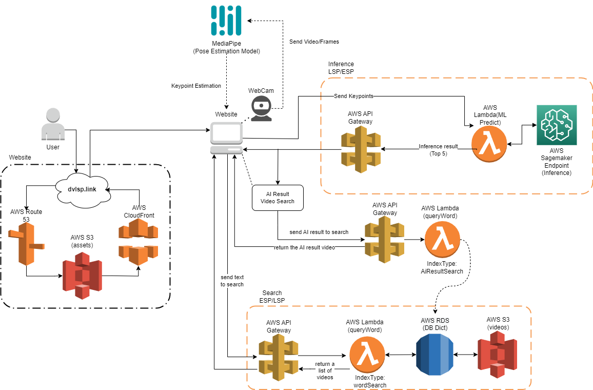

How it Works#
Overview#
User Perspective#
Navigating through the Dictionary LSP from a user’s perspective is straightforward and user-friendly. The user journey can be summarized in a few simple steps:
Access the Website: Begin by accessing the Dictionary LSP website.
Search and Record: For text-based searches, simply enter your desired search term and click the search button. Alternatively, for video-based searches, grant the necessary camera permissions and record a short 5-10 seconds video. This video will be used for machine learning inference.
Obtain Search Results: Receive the search results, which may include recognized signs or a list of similar LSP signs based on your search query.
Learn LSP: Engage with the search results and expand your knowledge of LSP as you explore the captured signs and their meanings.
React Integration: Connecting Front-end and Back-end#
The React Integration serves as a bridge connecting the front-end and back-end functionalities. It’s responsible for receiving data retrieved from various AWS services and presenting it to users through the user interface. This integration encompasses both the user interface design and the underlying JavaScript functionalities.
Front-end and back-end activities are intertwined within the React Integration, ensuring a seamless and responsive experience:
Front-end Structure: Utilizing Material Kit 2 (MK2) components for React, the front-end structure is built to provide an appealing and user-friendly interface. MK2 components, such as
MKBox,MKTypography,MKButton, andMKInput, play a pivotal role in shaping the UI and applying customized styles to elements.AWS Data Retrieval: The React Integration receives data retrieved from AWS services, such as Amazon S3, Lambda, and DynamoDB. This data may include video files, search results, or other relevant information.
Dynamic Rendering: React’s dynamic rendering capabilities enable real-time updates and content rendering without requiring full page reloads. This ensures that users receive instant feedback on their actions and queries, enhancing the overall responsiveness of the website.
Backend Configuration and AWS Services#
The backend configuration of the Dictionary LSP involves setting up and utilizing various AWS services to enhance the functionality and efficiency of the system:
AWS Account Setup: Create an AWS account and configure AWS credentials to enable seamless interactions with AWS services.
S3 Bucket Configuration: Establish S3 buckets to store assets such as video files. Ensure proper bucket configuration to facilitate efficient data storage and retrieval.
Model Deployment and Inference: Deploy the trained machine learning model using Amazon SageMaker, as detailed in the
Inference README. Use Lambda functions to create an intermediary between the web and the back-end for efficient communication.Database Interaction: Configure Lambda functions to interact with databases like RDS or DynamoDB. These interactions facilitate efficient text searches and data management, providing accurate search results.
Navigating through the Dictionary LSP involves engaging with the React Integration, which seamlessly connects the front-end user interface with the back-end AWS services. As users interact with the intuitive interface and receive dynamic search results, the integrated system ensures a smooth and informative experience.
Deployment of Dictionary LSP#
The deployment of the Dictionary LSP consists of three core modules: Website, Sign Search, and Text Search. Each module contributes to the functionality of the dictionary, enabling users to access and explore Peruvian Sign Language (LSP) signs efficiently.
The architecture diagram below provides a visual overview of the interplay between the three modules:

Website Module#
The Website module encompasses the front-end user interface and complementary backend functionalities. Built using JavaScript and React, the website provides a visually engaging experience for users. It offers features like webcam access, integration with AWS services, and real-time pose estimation through third-party APIs like Mediapipe. The website leverages AWS services such as Route 53, S3 Bucket, and CloudFormation.
Sign Search Module#
The Sign Search module is a critical and intricate component of the architecture, enabling users to perform accurate and efficient searches for Peruvian Sign Language (LSP) signs based on video input. This module seamlessly integrates various technologies and services to deliver a seamless experience. Here’s a comprehensive overview of how the Sign Search module operates:
Model Deployment and Inference: The foundation of the Sign Search module lies in the accurate recognition and classification of signs within streaming videos. This is achieved through the deployment of a Sign Language Recognition (SLR) model. The details of the model deployment and inference process are extensively covered in the dedicated
Inference repository. In summary, the SLR model is developed using Python and is trained to recognize and classify signs in real-time video streams. The model’s accuracy and performance are essential to providing users with meaningful search results.Backend Connections and React Integration: Once the SLR model successfully recognizes signs within video streams, the results are communicated to the website’s backend using AWS Lambda services. This integration is crucial to ensure smooth communication between the model and the user interface. AWS Lambda functions are triggered by the model’s output and subsequently update the website’s state. This process enables the website to display the recognized sign or a list of the top five similar LSP signs. The communication between the backend and the frontend is established using React, a widely-used JavaScript library. More details about this communication is in
React Integration Section.
Additionaly, the Sign Search module include a connection to the Text Search module through a similar functionality of text-search in order to show the sample videos for the AI results after the inference. This functionality use the same Lambda function as Text Search module but with a different indextype parameter, in order to enable a different output, showing a single video for the specific glosa predicted.
The Sign Search module leverages several AWS services to ensure its functionality such as Sagemaker, Lambda, S3 and API Gateway.
The collaboration of these AWS services, the SLR model, and the React-based frontend ensures the Sign Search module’s effectiveness in providing accurate, timely, and relevant sign search results. This module significantly enhances the Dictionary LSP’s usability and empowers users to explore and learn from LSP videos effectively.
Text Search Module:#
The Text Search module facilitates video retrieval based on textual queries. It encompasses the necessary services to execute text-based searches within the LSP video database. The database, hosted in AWS DynamoDB, contains vital information required to retrieve relevant videos based on specific criteria. Users can perform searches using either a word-based query (Search by Word) or a gloss-based query (Sign Search AI Video Search) resulting from AI-based inference. This module relies on various AWS services, including API Gateway, Lambda, RDS/DynamoDB, and S3, to ensure accurate and swift retrieval of videos that match the search criteria.
The integration of these modules enables the Dictionary LSP to deliver a comprehensive and user-friendly experience, allowing individuals to learn and explore Peruvian Sign Language efficiently. The combination of AI-driven sign recognition, text-based search, and an intuitive web interface empowers users to engage with and understand LSP in a meaningful way.
React Integration#
React plays a pivotal role in ensuring a seamless and user-friendly experience within the Dictionary LSP’s user interface. By integrating React, the website becomes capable of dynamically handling data updates and rendering content in real-time, all without requiring a full page reload. This integration significantly enhances the overall responsiveness and usability of the website, ensuring that users receive instant feedback on their sign search queries.
One of the key advantages of using React is its ability to manage state efficiently. The website’s state, which encompasses the data being displayed and user interactions, is effectively managed by React components. This allows for smooth updates and re-rendering of specific parts of the interface as new data becomes available. As a result, users can witness immediate changes on the screen, providing a fluid and intuitive experience.
To enhance the visual appeal and usability of the user interface, Material Kit 2 (MK2) components for React are employed. These components serve as building blocks for constructing the UI and applying styling to the page’s elements. The integration of MK2 components aligns with modern design principles, ensuring that the website’s appearance is both aesthetic and functional.
Here’s a breakdown of how the imported MK2 components correspond to the code:
MKBox: This versatile component facilitates the creation of flexible containers and allows for the application of customized styles to various sections of the interface. It aids in structuring the layout and organizing different content components.MKTypography: Designed specifically for rendering text with tailored typography styles, this component ensures consistent and visually pleasing text throughout the website. It enables the implementation of varying font styles and sizes to suit different parts of the content.MKButton: TheMKButtoncomponent is utilized for creating buttons with personalized styles. Buttons are essential for user interactions, and the ability to customize their appearance enhances the overall visual coherence and user experience.MKInput: Although not explicitly present in the provided code, I assume theMKInputcomponent is employed to generate input fields with distinctive styles. Input fields are commonly used for user inputs and search queries, and customizing their appearance contributes to the overall design consistency.
For a more detailed understanding of how React is integrated within the Dictionary LSP’s user interface, along with the utilization of Material Kit 2 (MK2) components, you can refer to the dedicated Stratlabs Template. This template provides insights into the project structure, React integration, and the application of MK2 components for enhanced UI design and interactivity.